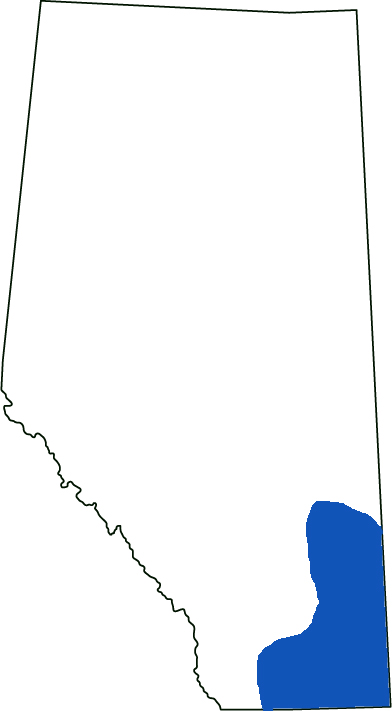

Prairie Rattlesnake
Scientific Name: Crotalus viridis viridis
General Status: May be at Risk
The Prairie rattlesnake is known for the rattle on its tail and is the only poisonous snake in Alberta, but it’s rarely fatal. It lives in the coulees and badlands in burrows and are usually on southern banks for the maximum amount of sunlight. The reason for their decline is destruction of their habitat and intentional destruction of the snakes and their homes.
Range
